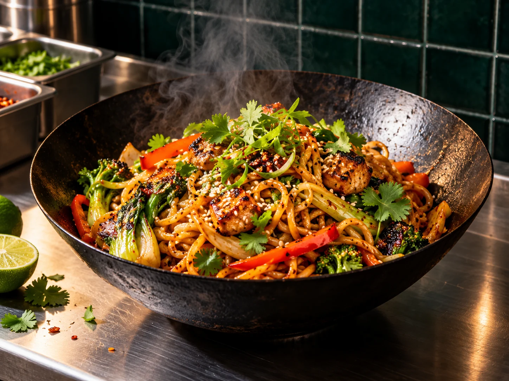

Lámen da casa
Uma vitrine para o prato de maior apelo visual.
Uma proposta de site para restaurante asiático que combina desejo visual com uma escolha clara de região e modalidade.
Explorar atendimentoO visitante chega com fome e uma pergunta prática: entrega na minha região ou posso retirar? Esta experiência coloca a resposta no percurso de descoberta, antes de qualquer cardápio extenso.
Escolha uma região conceitual e uma modalidade para ver como o site poderia orientar o cliente. Cobertura, endereço e disponibilidade reais dependeriam da operação.
Selecione uma área ilustrativa.
Escolha como gostaria de receber.

Uma versão real verificaria disponibilidade e prazo antes de encaminhar o pedido.
Rota demonstrativa; sem geolocalização ou consulta de cobertura real.
Conceito fictício criado para o portfólio ServAgency.
Conhecer a ServAgency